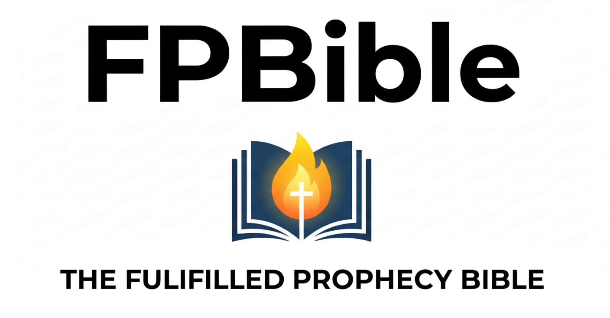

Scripture Through Fulfillment
The World English Bible (WEB) with study commentary that keeps Scripture inside its original, first-century covenant horizon — zero futurism, zero delay theology.
Start Here: The Foundation
Christian faith is not defined by waiting, countdowns, or speculation. Its center is presence — a settled life grounded in what Christ has already accomplished.
-
The New Creation Manifesto
A 2-minute read on presence, settled life, and why we read Scripture through completion. -
The End of the Law
Why Sinai has no jurisdiction in Christ and why AD 70 ended the Law system. -
The Resurrection
Life now in Christ. Understanding resurrection as spiritual life and covenantal vindication. -
The Day of Atonement
Hebrews 9 read correctly: sanctuary logic, priestly "appearing," and covenant judgment.
Build notes (contributors): The FPBible Chapter Standard
Finished Books
Chapters present Scripture (WEB) followed by Fulfillment Notes and expanded commentary.
Old Testament
New Testament
-
Matthew
The Kingdom inaugurated. Includes the Olivet Discourse (Ch 24). -
John
The Word made flesh and eternal life as a present possession. -
Romans
Justification, the groaning of creation, and the grafted olive tree. -
1 Corinthians
The transformation of the body and the end of the Old Covenant age. -
2 Corinthians
The fading glory of Moses vs. the eternal glory of the New Covenant. -
Galatians
Freedom from the Law and the reality of the New Creation. -
Ephesians
The mystery revealed: Jew and Gentile made one new man in Christ. -
Philippians
Joy, union with Christ, and the imminent vindication. -
Colossians
The supremacy of Christ and the disarming of the spiritual rulers. -
1 Thessalonians
Comfort concerning those asleep and the imminent parousia. -
2 Thessalonians
The Man of Lawlessness and the imminent day of judgment. -
Hebrews
The obsolete priesthood and the "about to disappear" old order. -
James
Faith in action and the impending judgment upon the corrupt elite. -
Revelation
The complete 22-chapter breakdown of AD 70 covenant judgment.
Resources & Application
Deep dives into key concepts and the practical outworking of the New Creation.
The Prophecy Hub
Centralized fulfillment explanations for recurring terms. Start here when you encounter specific prophetic idioms in the text.
- Apocalyptic Dictionary (Start Here)
- View the Full Prophecy Hub Index (Cosmic Collapse, Parousia, The Beast, Unquenchable Fire, etc.)
Studies & Life
If this resource helps ground you in the finished work of Christ, you can help sustain it.